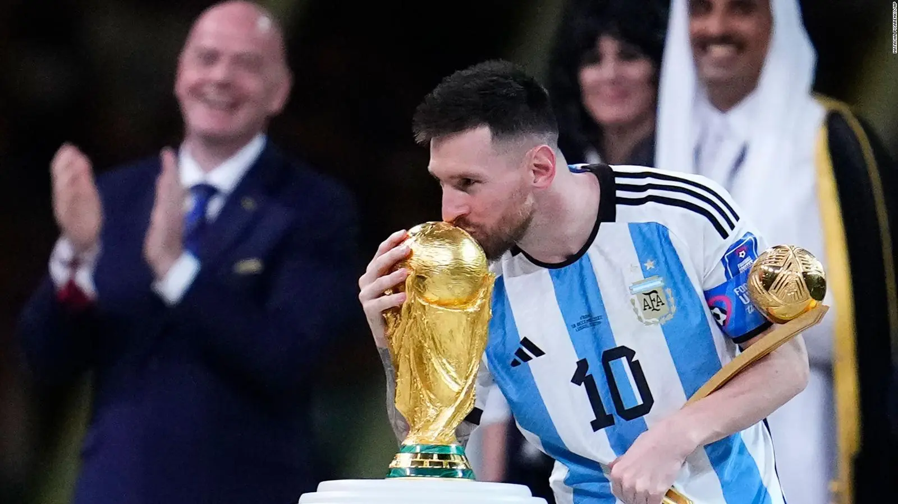

He aquí los números importantes; máximos goleadores y asistidores de la Copa del Mundo.
Máximos goleadores
- Miroslav Klose, 16 goles. Con su último gol en el mundial Brasil 2014 (torneo donde además fue campeón), el delantero histórico alemán destronó a Ronaldo Nazário como máximo goleador en la historia de los mundiales. Esta anotación fue nada mas y nada menos que en la goleada histórica de 7-1 en contra del anfitrión, en las semifinales.
- Ronaldo Nazario, 15 goles. Leyenda del fútbol brasileño, mejor apodado como 'O fenómeno'. Sin dudas que Ronaldo dejó una imprenta en la historia de los goleadores de la Copa Mundial de fútbol, participando en 4 ediciones y ademas siendo campeón en 2 de ellas (1994 y 2002). Este último es el mas recordado, ya que fue el maximo anotador del torneo con 8 goles, y marcó dos de ellos para darle la victoria a Brasil sobre Alemania en la final.
- Gerd Mueller, 14 goles. Otro emblema del deporte alemán (en su época aún era Alemania Occidental). Apodado como "Der Bomber", Mueller fue uno de los mejores delanteros de la historia. Fue campeón en el mundial celebrado en 1974 en Alemania, en el cual también fue el máximo anotador del torneo con 10 goles y fue ganador de la bota de oro, un premio que es otorgado al mejor jugador del campeonato.
- Lionel Messi/Just Fontaine, 13 goles. Aquí tenemos a dos jugadores empatados.
Lionel Messi:
Para muchos el mejor jugador de la historia, Lionel Andrés Messi Cuccittini, mejor apodado como 'La pulga' es un astro argentino el cual no se ha cansado de hacer historia en la Copa mundial de fútbol. No solo es el jugador argentino con mas presencias (26), sino que ha jugado en 5 copas del mundo. Es el jugador con mas goles y asistencias (G/A) de la historia de los mundiales con 21 G/A. A pesar de perder la final con Alemania en 2014, Messi tuvo su revancha en 2022, realizando una de las mejores actuaciones individuales de la historia en un campeonato mundial, y quedandose con el título.
El soñado debut en 2006
Lionel Messi ingresaba para marcar el 6-0 ante Serbia y Montenegro

Tan cerca de la gloria...
Argentina perdía la final de la Copa Mundial ante Alemania en 2014
Finalmente la revancha en 2022
Messi lleva a Argentina a ganar su tercer mundial en su historia
Just Fontaine: Es una leyenda del fútbol francés, conocido particularmente por su desempeño en la Copa Mundial de Suecia 1958, donde estableció un record que aún sigue vigente, máxima cantidad de goles convertidos en una sola edicion: 13 goles. Si bien no ganó la Copa del Mundo, fue máximo goleador de la edicion de 1958, ganó la bota de oro y marcó en cada uno de los 6 partidos que disputó, ayudando a Francia a alcanzar el tercer lugar en ese mundial.
- Kylian Mbappé/Pelé, 12 goles. En quinto lugar tambien tenemos dos jugadores que comparten posición.
Kylian Mbappé: Popular estrella francés de la actualidad y uno de los mejores jugadores del mundo. Contribuyó significativamente al título mundial de Francia en 2018, convirtiéndose en el segundo adolescente, después de Pelé, en marcar en una final de la Copa del Mundo. Luego en 2022 Ganó la Bota de Oro como máximo goleador del torneo y se convirtió en el segundo jugador en la historia en anotar un hat-trick en una final de la Copa del Mundo.

Un debut de ensueño
Con 19 años, Kylian Mbappé se coronaba campeón del mundo


Un sabor amargo en 2022...
Francia era derrotada por Argentina y quedaba en segundo lugar...¿tendrá su revancha?
Pelé: Para muchos conocedores del deporte, 'O rei' Pelé fue el mejor jugador de la historia del fútbol. Dejó una huella imborrable en la historia de los Mundiales de la FIFA. Participó en cuatro ediciones y es el unico futbolista que tiene un record que parece inalcanzable, ganador de 3 copas del mundo. Ayudó sin duda a potenciar el 'jogo bonito' de la seleccion brasilera y convirtió a Brasil en una potencia del fútbol mundial. Fue parte de lo que se considera le mejor version de una seleccion en la historia, Brasil en 1970.

Alemania campeón en 2014
Miroslav Klose alzando el trofeo mundial de fútbol


Mundial 2006 en Munich, Alemania
Con este gol, Klose celebraba su primer hattrick en los mundiales.
Tres leyendas campeonas del mundo
Ronaldo junto a Rivaldo y Cafú festejando el titulo en 2002


Festejo de gol icónico
Su último gol en los mundiales, para darle el titulo a su nación

La segunda estrella de Alemania
Alemania Occidental se consagraba campeona del mundo en 1974


Gerd Mueller contra Uruguay
Se disputaba el tercer puesto del mundial 1970, con victoria Alemana por 1-0
Empezaba a romper el record
Just Fontaine marcaba 3 goles en el primer partido contra Paraguay en 1958


El hombre de la bota de oro
Fontaine anotaba 2 goles ante Alemania Federal y aseguraba la medalla de bronce

La leyenda memorable
Pelé mostrando su palmarés de la Copa del Mundo

El creador de una mítica dorsal
Con 17 años, convirtió la camiseta 10 en un símbolo de talento, creatividad y liderazgo
Máximos asistidores
- Pelé: 10
- Lionel Messi: 9
- Diego Maradona: 8
- Grzegorz Lato: 7
- Pierre Littbarski: 6
Para ver goles asombrosos, clic aquí